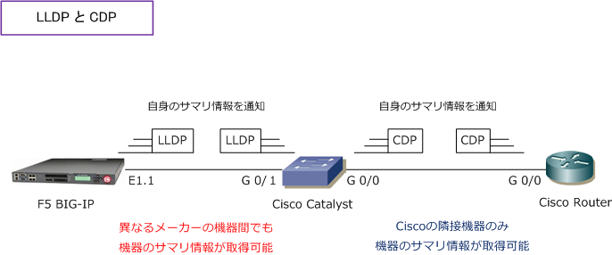

LLDP
LLDPとは
LLDP（Link Layer Discovery Protocol）は、隣接するマルチベンダー機器に対して、自分の機器情報を アドバタイズするために使用するL2プロトコルです。CDPはシスコ機器だけしか隣接機器の情報が得られ ませんでしたが、LLDPでは異なるメーカーの隣接機器である場合もその機器のサマリ情報が得られます。
| 比較項目 | LLDP | CDP |
|---|---|---|
| 標準規格 | IEEE802.1AB | CISCO独自 |
| 動作レイヤ | データリンク層 | データリンク層 |
| アドバタイズ方法 | マルチキャスト | マルチキャスト |
| マルチキャストMACアドレス | 0180.C200.000E | 0100.0CCC.CCCC |
| Catalystスイッチのデフォルト | 無効 | 有効 |

LLDPは、隣接機器の検出に際してTLVと呼ばれるタイプ（Type）長さ（Length）値（Value）の属性を を使用してネイバーから情報を認識することができます。LLDPで送信する「必須のTLV」は次の3つです。
・ Chassis ID ・ Port ID ・ Time To Live
以下の5つのTLVについてはオプション（Optional）となります。
・ Port Description ・ System Name ・ System Description ・ System Capabilities ・ Management Address
| TLV type Value | TLV name | Usage in LLDPPDU |
|---|---|---|
| 0 | End of LLDPDU | Mandatory |
| 1 | Chassis ID | Mandatory |
| 2 | Port ID | Mandatory |
| 3 | Time To Live | Mandatory |
| 4 | Port description | Optional |
| 5 | System name | Optional |
| 6 | System description | Optional |
| 7 | System capabilities | Optional |
| 8 | Management address | Optional |
以下のIEEE固有のLLDP TLVも隣接機器への 通知に使用されてLLDP-MEDをサポートします。
・ ポートVLAN ID TLV ⇒ IEEE802.1（VLAN）関連項目 ・ MAC/PHYコンフィギュレーション/ステータス TLV ⇒ IEEE802.3（ LAN ）関連項目
LLDP-MED（LLDP for Media Endpoint Devices）はLLDPの拡張版であり、IP電話などのエンドポイント デバイスとネットワークデバイスの間で動作します。特にVoIPアプリケーションをサポートし、検出機能、 ネットワークポリシー、PoE、コンポーネント管理、ロケーション情報のTLVを提供します。デフォルトで、 すべての LLDP-MED TLV がイネーブルです。 ※ ちなみに、CDP TLVでは「Native VLAN TLV」をサポートされていますが、LLDP-MED TLVではサポートされていません。
LLDP - Catalystのデフォルト設定
| 機能 | デフォルト値 |
|---|---|
| LLDP グローバルステート | ディセーブル |
| LLDP ホールドタイム（廃棄までの時間） | 120秒 |
| LLDP タイマー（パケット更新頻度） | 30秒 |
| LLDP 再初期化遅延 | 2秒 |
| LLDP tlv-select | ディセーブル（すべての TLV との送受信） |
| LLDP インターフェイス ステート | ディセーブル |
| LLDP 受信 | ディセーブル |
| LLDP 送信 | ディセーブル |
| LLDP med-tlv-select | ディセーブル（すべての LLDP-MED TLV への送信） LLDP がグローバルにイネーブルにされると LLDP-MED-TLV もイネーブル |
LLDP - Catalystスイッチの設定
CDPはデフォルトで有効化されていますが、LLDPはデフォルトで無効なので有効化する必要があります。
スイッチ全体でLLDPの有効化
Catalyst(config) # lldp run
上記の lldp run コマンドによって全てのインターフェースでLLDPの送受信が有効化されますが、特定の インターフェースに対してLLDPの送受信を無効化するためには以下のコマンドで設定変更します。
LLDPパケットを送信しないようにインターフェース（G0/5）上で無効化
Catalyst(config) # interface gigabitethernet0/5 Catalyst(config-if) # no lldp transmit
LLDPパケットを受信しないようにインターフェース（G0/5）上で無効化
Catalyst(config) # interface gigabitethernet0/5 Catalyst(config-if) # no lldp receive
LLDPステータス確認
| LLDPコマンド | 説明 |
|---|---|
| show lldp | LLDPがグローバルで有効化しているかの確認、各種タイマー値の確認 |
| show lldp interface | LLDPが有効化されているインターフェースに関する情報の確認 |
| show lldp neighbors | LLDPのネイバー情報の確認 |
| show lldp neighbors detail | LLDPのネイバー情報の詳細な確認 |
| show lldp traffic | LLDPトラフィックのカウンターの確認 |
| show lldp errors | LLDPトラフィックのカウンターエラーの確認 |
LLDPクリアコマンド
| LLDPコマンド | 説明 |
|---|---|
| clear lldp counters | LLDPのカウンターのクリア |
| clear lldp table | LLDPネイバーテーブルの情報削除 |
オプション：LLDPホールドタイムを180秒、LLDPの初期化遅延を3秒、LLDPパケットの更新頻度を60秒に変更する設定
Catalyst(config) # lldp holdtime 180 Catalyst(config) # lldp reinit 3 Catalyst(config) # lldp timer 60
オプション：有効化するTLVを指定する設定（ここでは inventory-management を指定）
Catalyst(config) # interface gigabitethernet0/1 Catalyst(config-if) # lldp med-tlv-select inventory-management
LLDPによるVLANの割り当て設定 - トランクポートの場合（ IP-PhoneにPCを接続する構成 ）
Cisco IP Phoneの場合は、CDPによってVLAN IDやQoS値をアドバタイズできますが、他メーカーの IP Phoneの場合は、それを実現するためにはLLDPを使用する必要があります。前提として、Catalyst スイッチだけでなくIP Phone側もLLDPに対応している必要があります。また、理論上可能であっても 事前検証でしっかりと動作確認したうえで、実現の可否についてユーザーに報告するようにしましょう。 ※ VLANの割り当ては「LLDP」ではなく「手動」の割り当てをお勧めします。その場合の設定は音声VLANをご参照下さい。
Cisco以外のAvayaなどのIP電話にLLDPでVLANを割り当てる設定例（ VLAN10 IP-Phone用、VLAN20 PC用 ）
Catalyst(config) # lldp run
Catalyst(config) # network-policy profile 1 Catalyst(config-network-policy) # voice vlan 10
Catalyst(config) # interface gigabitethernet0/1 Catalyst(config-if) # network-policy 1 Catalyst(config-if) # lldp med-tlv-select network-policy
Catalyst# show run interface gigabitethernet0/1
interface gigabitethernet0/1 switchport access vlan 20 switchport mode access network-policy 1 priority-queue out mls qos trust cos spanning-tree portfast
IP電話機の型番により、正常に動作するものと動作しないものがありました。LLDPでVLAN IDを割り当てる場合は事前検証が必須。 lldp med-tlv-select network-policy の設定は I/F でデフォルトで有効化されているため、コンフィグ上は表示されません。なお、 IP Phone マニュアルに Cisco IP Phone でないにも関わらず switchport voice vlan を使用する例もありました。The switchport voice vlan 10 command will cause the LLDP-MED to advertise VLAN 10 in its Network Policy TLV to the Avaya IP phone.
MED Information:
Capabilities: NP, PD, IN Device type: Endpoint Class III Network Policy(Voice): VLAN 10, tagged, Layer-2 priority: 5, DSCP: 46 Power requirements - not advertised Location - not advertised